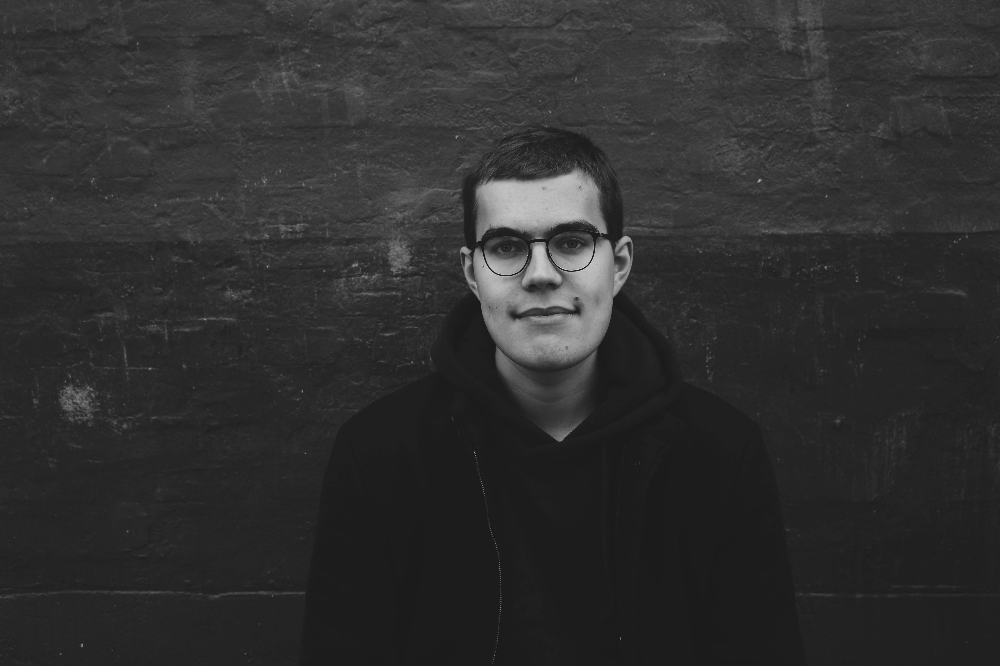

I’m Sander Sinnep, a multimedia design
student based in Copenhagen.
About me
I’m an up-and-coming web developer & content creator located in Copenhagen, Denmark. I’m someone, who is driven by humour, wonder, creativity & the great people around him.
I enjoy my studies since they provide me an environment, where I can learn web-development, discover the newest design trends, come up with creative solutions and network with like-minded and great people.